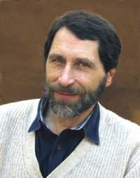

People  Mikhail Yu. Tretyakov Mikhail Yu. Tretyakov
Mikhail Yurievich Tretyakov
E-mail: trt (at) appl.sci-nnov.ru
Tel: +7 (831) 416-48-66
|  |
Mikhail Yu. Tretyakov was born in Nizhny Novgorod, Russia, in 1958.
Graduated from Gorky State University in 1980. The master degree thesis "Analysis of Subdoppler Microwave Spectrometer Based on Coherent Spontaneous Radiation of Molecules" was recognized to be
The Best Students Scientific Work in the USSR in 1980. From 1980 to the present time is with the Institute of Applied Physics. Current position - Head of the Laboratory of Microwave Spectroscopy, member of the Scientific Council of the Institute.
Scientific supervisor of undergraduate and Ph.D. students. Since 2006 member of Scientific committee of the Symposium on High Resolution Molecular Spectroscopy (HighRus).
Journal Editorial Review Boards (Radiophysics and Quantum Electronics, Journal of Chemical Physics, Journal of Molecular Spectroscopy, Molecular Physics, Physical Chemistry Chemical Physics, Journal of Quantitative Spectroscopy and Radiative Transfer). Since 2015 member of Journal of Molecular Spectroscopy editorial board. |
The Ph.D. degree in Physics and Mathematics was received in 1995. The theme of Ph.D. thesis is "Development of methods of microwave spectroscopy in Terahertz frequency range". Since 1997 he is an assistant professor. Major interests - high resolution molecular spectra experimental studies in millimeter and submillimeter wave range; development of new microwave techniques and methods.
Highlights of research include: the first frequency multiplication of BWO radiation
up to 1.5 THz; the development of Terahertz video-spectrometer based on phase-locked BWO
and liquid He cooled bolometer (jointly with the University of Cologne and later with the University of Lille);
the development of MM/SubMM-wave sweeper and gas analyzer (Principal Investigator of the Russian team
in the joint project with Argonne National Laboratory USA in the frame of US Industrial Coalition Trust-I
and Trust-II Projects); the first frequency stabilization of FIR laser against harmonic of millimeter-wave
synthesizer (jointly with the University of Lille); development of CO2-laser + MW side-band spectrometer with
a slit nozzle (jointly with the University of New Brunswick, Saint John); the first frequency stabilization of
primary radiation source of subterahertz range by femtosecond laser induced comb (the new synthesizer); development of MM/SubMM-wave
resonator spectrometer for atmospheric absorption investigations; the first microwave observation of negative
molecular ions (jointly with Heyrovsky Institute of Physical Chemistry, Prague and the University of Lille);
); the first detection of water dimer by observation of its rotationally resolved spectrum in room temperature water vapor; studies of spectra of H20, H2Se, SO2, CF3H, CH3CHO, O2,
OCS molecules and H2O-HF, (CH3OH)2, CH3OH-CO molecular complexes.
Invited lectures at: The 15th International Conference on High Resolution
Molecular Spectroscopy, Prague 1998; 3rd International Symposium on Physics
and Engineering
of MM and SubMM Waves, Ukraine, 1998; The 25-th International Conference
on Infrared and Millimeter Waves, September 12-15 2000, Beijing, China;
NATO Advanced
Research Workshop "Spectroscopy from Space", Oct. 31-Nov.4, 2000,
Bratislava, Slovakia; XIV Symposium on High Resolution Molecular Spectroscopy
(HighRus-2003), July 6-11 2003, Krasnoyarsk, Russia; Hua Dong Institute of
E.M.I. Qingdao, China, March 2006; The 23rd International Conference on High Resolution Molecular Spectroscopy,
Bologna, Italy, September 2-6, 2014.
Selected papers
|